IMPORTACIÓN DE TEMA JEKYLL LAGRANGE
Comenzamos la importación
En mi caso, importaré el tema utilizando Forking.
Accedo al repositorio de Lagrange y realizo un Fork.
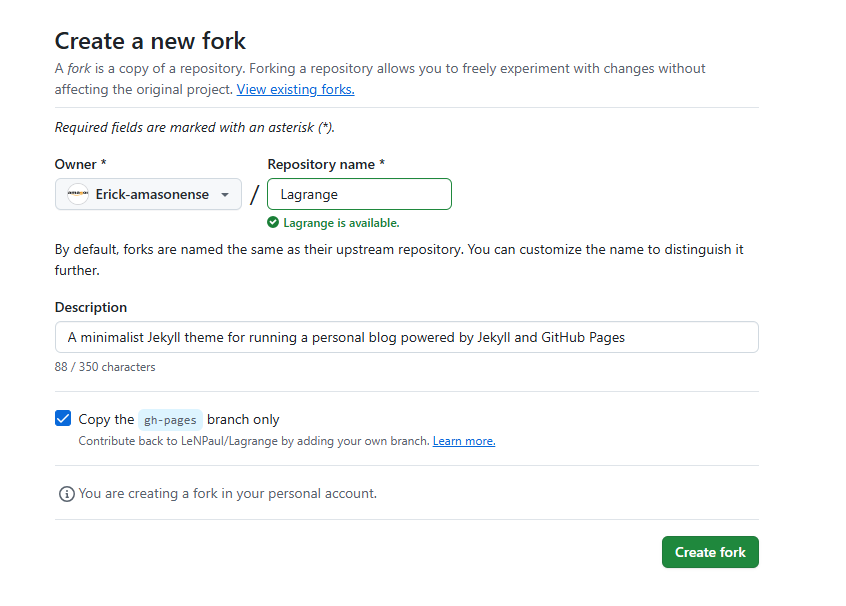
A continuación clono el repositorio en mi máquina local.
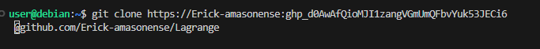
Personalización del sitio
Configuro el sitio abriendo el archivo _config.yml mediante:
nano _config.yml
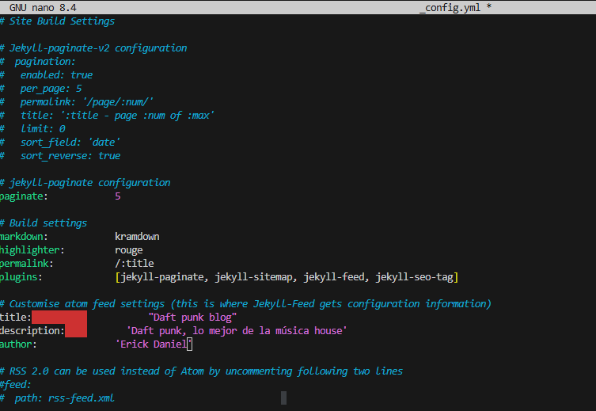
Guardo los cambios.
Luego copio los archivos necesarios (usando las mismas imágenes del ejercicio anterior).
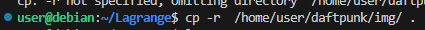
Personalizo el archivo index.md con:
nano index.md
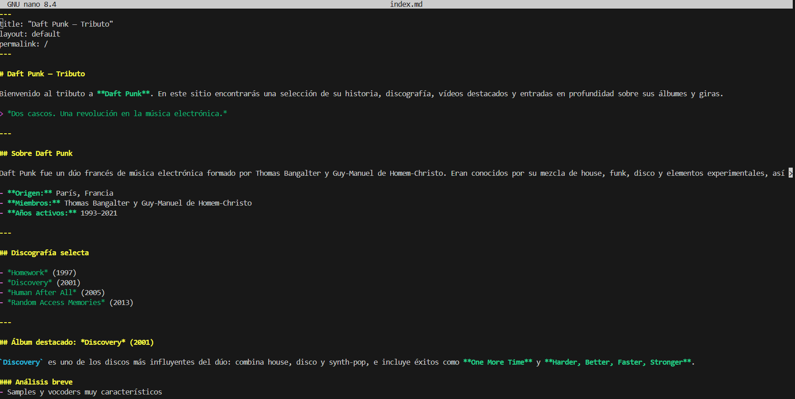
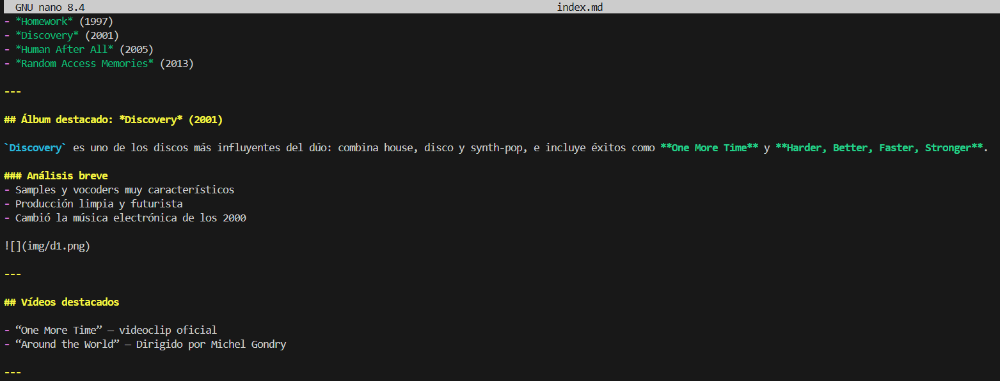
Guardo los cambios.
Creo un post en la carpeta /_posts usando:
nano 2025-12-4-discovery-analisis.md
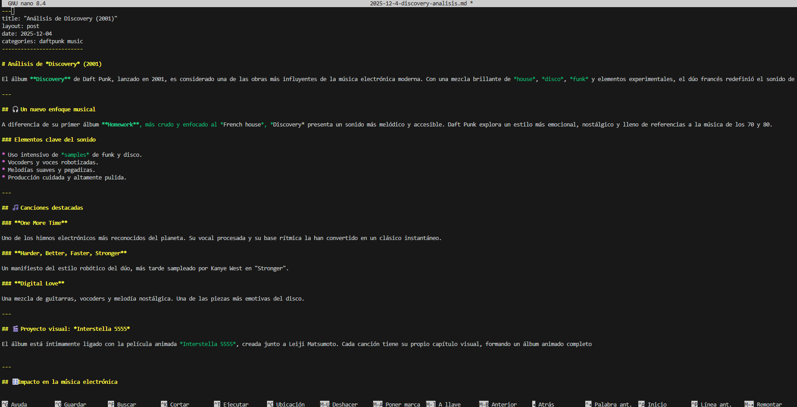
Guardo nuevamente.
Personalizo el archivo about.md con el comando:
nano about.md
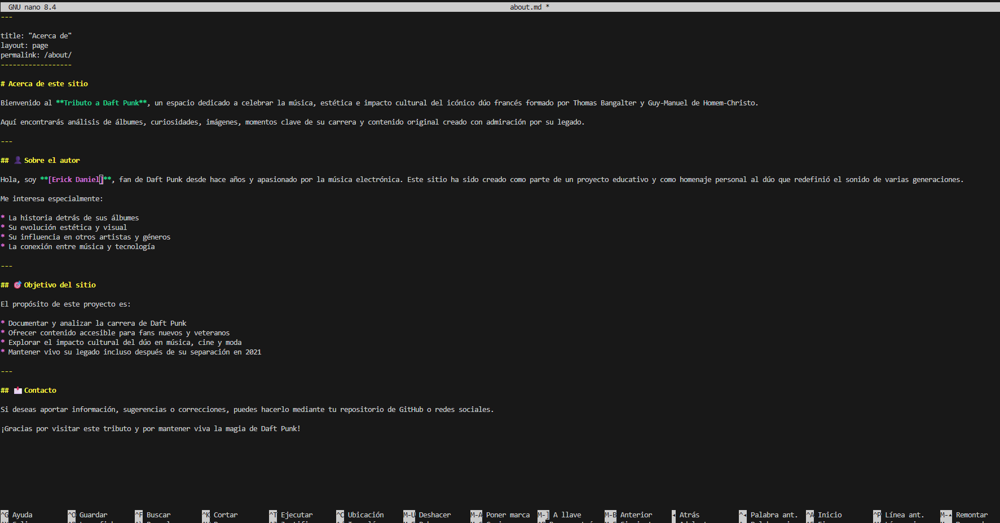
Guardo los cambios.
Creo una página adicional llamada curiosidades.md mediante:
nano curiosidades.md
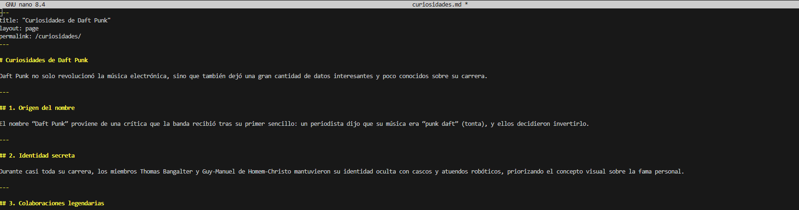
Guardo los cambios.
Regreso a index.md y añado al final el enlace a los posts y a la nueva página adicional.
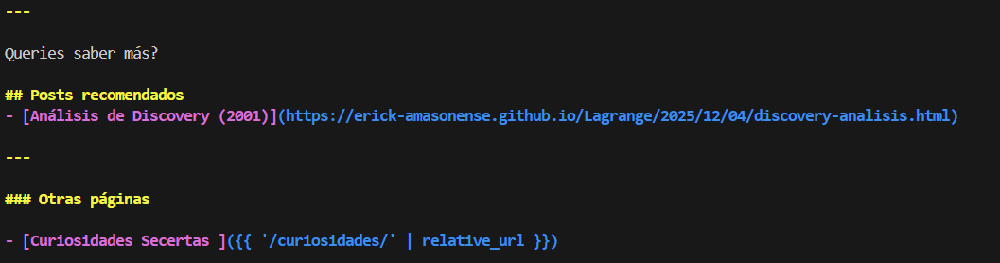
Inicialización del sitio
Descargo las dependencias necesarias.
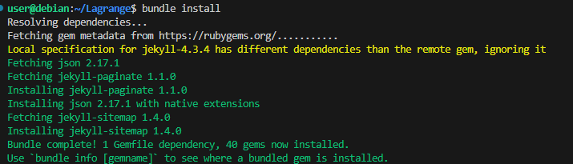
Iniciamos el servidor web.
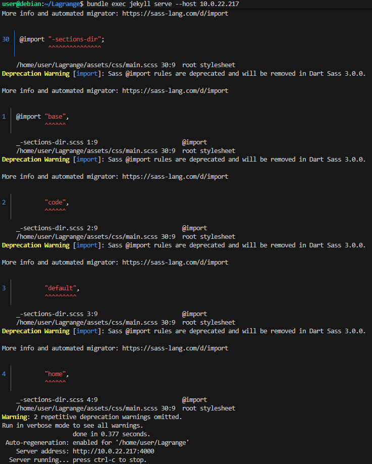
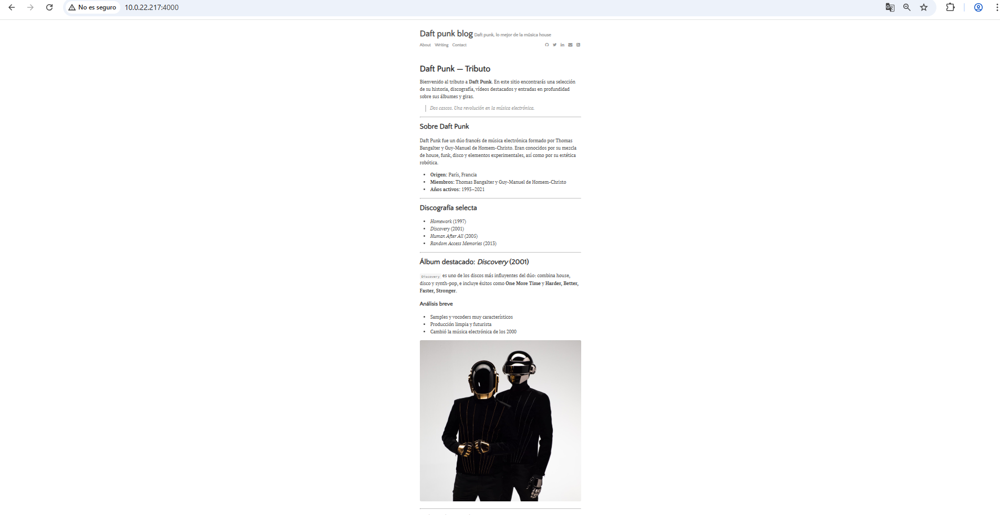
Despliegue en GitHub
Subo los cambios realizados al repositorio remoto.
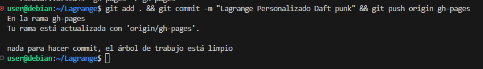
Espero a que se ejecute el desplegue en github y hemos terminado.
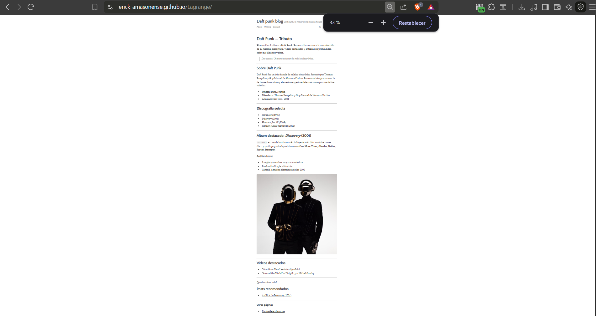